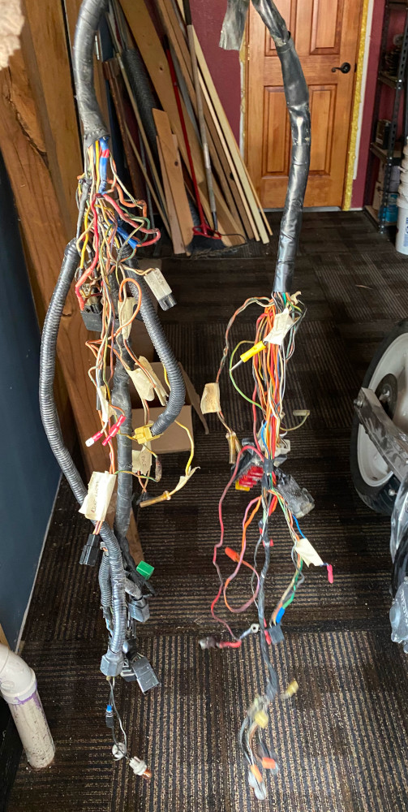

Got the wire harness out, it doesn't look too bad in this picture but some wires have been repaired with a newer wire with a DIFFERENT COLOR... WHY ?!?!?! and instead of a proper solder joint and a shrink-tube someone thought it was better to use WIRENUTS 😖 to me that's like nails on a Blackboard. I am not sure what to do with this - at the moment of writing I am considering junking the existing harness and re-wire the whole bike, that way I can also make some sort of controller for the bikes electrical system, route the wires inside the frame and use some more modern components.
